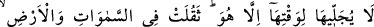
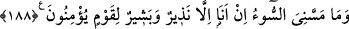

KIYÂMET SAATİ VE
GAYBI BİLMEK
187. Sana kıyameti, ne zaman gelip çatacağını soruyorlar. De ki: Onun ilmi ancak
Rabbimin katındadır. Onun vaktini O’ndan başkası açıklayamaz. O göklere de yere
de ağır gelmiştir. O size ansızın gelecektir. Sanki sen onu biliyormuşsun gibi sana
soruyorlar. De ki: Onun bilgisi ancak Allah’ın katındadır; ama insanların çoğu
bilmezler.
188. De ki: “Ben, Allah’ın dilediğinden başka kendime herhangi bir fayda veya
zarar verecek güce sahip değilim. Eğer ben gaybı bilseydim elbette daha çok hayır
yapmak isterdim ve bana hiçbir fenalık dokunmazdı. Ben sadece inanan bir kavim
için bir uyarıcı ve müjdeleyiciyim.”
“Sana kıyâmet saatini,” Arapça’da genel olarak “yıldız” deyince Süreyyâ yıldızı
kastedildiği gibi “
” deyince de kıyamet kastedilir. Kıyâmete “sâat” denilmesi
âniden meydana geleceği için veya o günde olacak hesabın çok kısa sürede bitip
tamamlanacağı içindir. Çünkü bir iş Allah’ı başka bir işi yapmaktan alıkoyamaz. Yahut
da kıyâmet, uzunluğuna rağmen Allah katında mahlûkâta göre saatlerden bir saat gibi
olması sebebiyle “sâat” diye isimlendirilmiştir. Bunun aslı, insanların kabirlerinden
kalkış saatidir. Fakat sadece “sâat” denilince bu mânâ anlaşıldığı için böyle uzun bir
isim tamlamasına gerek duyulmamıştır.
Rivayete göre yahudilerden bir topluluk: “Ey Muhammed, eğer gerçekten
peygambersen kıyametin ne zaman kopacağını bize haber ver. Çünkü biz onun ne vakit
olacağını biliyoruz.” dediler. Onlar, kıyametin kopma vaktinin yalnız Allah’a ait bir
bilgi olduğunu bildikleri halde bu soruyu sırf imtihan maksadıyla sordular. İşte bunun
üzerine bu ayet nâzil oldu.
“ne zaman gelip çatacağını soruyorlar.” “
” (gelip çatma) kelimesi bir şeyi
yerleştirmek, sabitleştirmek mânâsına gelir. Genellikle büyüklük ve ağırlık ifade eden
şeylerde kullanılır. Nitekim bir ayette: “Dağları sağlam bir şekilde yerleştirdi ” (en-